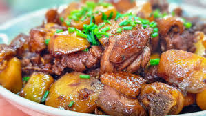

I chose to make this recipe page because food is one of the strongest ways I remember home. In Chinese culture, there is an old saying: people regard food as the most important thing in life. Food is not only something we eat, but also something that carries family, love, and memory. When I cook stewed chicken with potatoes, I feel close to my hometown again.
Chinese culture is deeply connected with food. Many family memories are made around the dinner table, especially during holidays, birthdays, and family gatherings. For me, missing home is often connected with missing the food my mother made. Her cooking reminds me of the place where I grew up and the love I received as a child.

This page is also a way for me to remember and honor my mother. She taught me how to cook when I was young, even though I did not understand its meaning at that time. Now I realize that cooking was one of the ways she showed care and responsibility. Through this recipe, I want to say thank you to my mother and wish all mothers a happy Mother's Day.
This recipe is more than a dish to me. It is a memory of my country, my childhood, and my past. Living in another country has helped me understand how precious those memories are. By sharing this food story, I am also sharing a part of who I am.